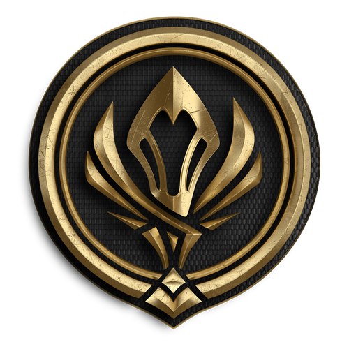
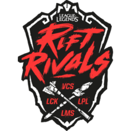
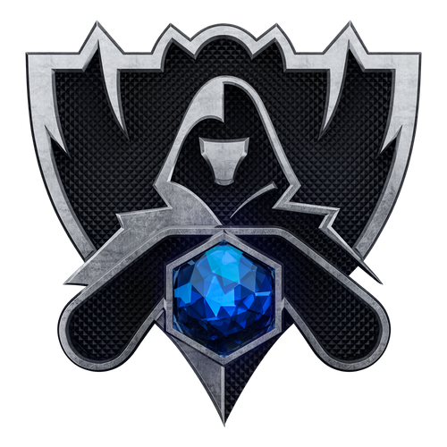

LCK가 참가하는 국제대회


MSI (Mid-Season Invitational)
2015년 부터 개최한 각 나라의 리그 오브 레전드 1부 리그 전기 시즌(한국은 Lck spring) 우승팀이 모여 겨루는 중간 점검 성격의 국제 대회. 월드 챔피언십이 최고의 팀을 가리기 위한 대회라면, 이쪽은 가장 강한 지역을 가리자는 컨셉의 대회. 즉, 클럽 대항전인 월드 챔피언십보다 국가 대항전의 성격이 강하다.
2015 - SKT 준우승
2016 - SKT 우승
2017 - SKT 우승
2018 - KZ 준우승
2016 - SKT 우승
2017 - SKT 우승
2018 - KZ 준우승
2019 - SKT 3,4위


Rift Rivals
2017년 부터 개최된 리그 오브 레전드의 또 다른 국제 대회로 블루리프트(유럽 vs 북미)와 레드리프트(한국vs중국vs대만,홍콩,마카오vs베트남)로 라이벌성이 짙은 리그끼리 나뉘어 개최된다. 여러 문제가 있어 2019년 Rift Rivals를 마지막으로 2020년 3월 20일 폐지되었다.
2017 - LCK 2위
2018 - LCK 2위
2019 - LCK 1위
2018 - LCK 2위
2019 - LCK 1위


League of Legends World Championship
라이엇 게임즈가 직접 개최하는 리그 오브 레전드 e스포츠의 시즌 결산 세계 대회. 세계 1위팀을 가리는 대회로 공식 약칭은 Worlds. 동시 접속 시청자 수와 시청 시간 부분에서 e스포츠 역사상 최고의 기록을 보유하고 현재까지도 계속 신기록을 경신 중인 가장 큰 대회이기도 하다.
2012 - Azubu Frost 준우승
2013 - SKT T1 우승
2014 - Samsung white 우승
2015 - SKT T1 우승
2016 - SKT T1 우승
2017 - Samsung Galaxy 우승
.
.
.
.
2013 - SKT T1 우승
2014 - Samsung white 우승
2015 - SKT T1 우승
2016 - SKT T1 우승
2017 - Samsung Galaxy 우승
.
.
.
.
2018 - 4강 진출 실패
2019 - SKT T1 3,4위
2019 - SKT T1 3,4위